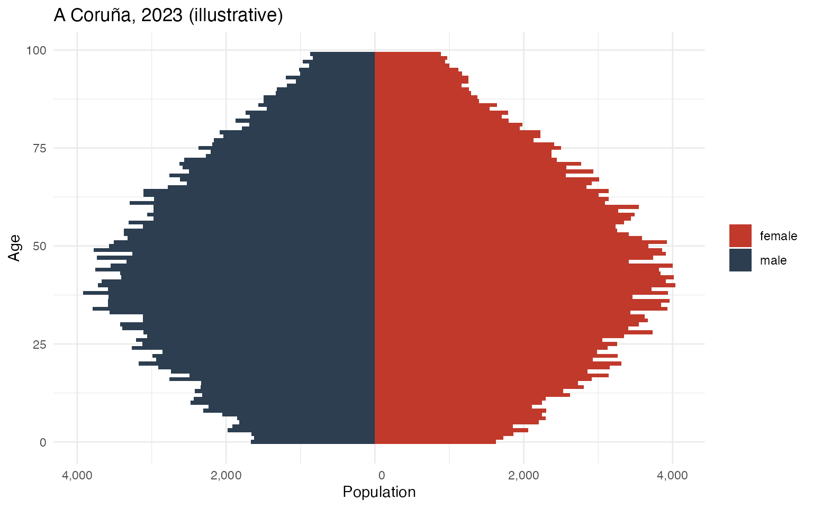
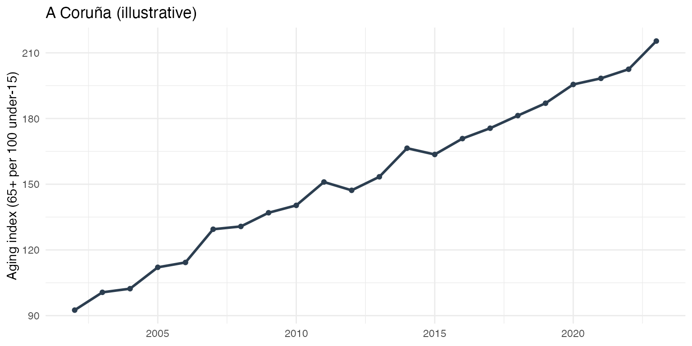
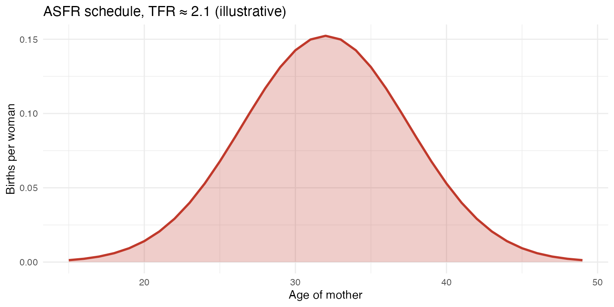
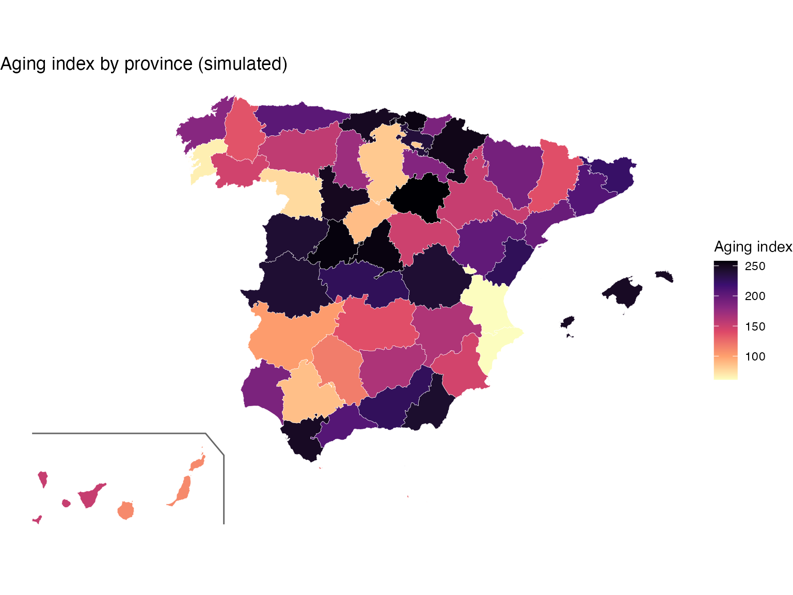

inedemogR wraps the Spanish National Statistics
Institute (INE) “fenómenos demográficos” tables (population, births,
deaths) behind a small set of tidy retrieval functions, a
mortality/fertility analysis pipeline, and ggplot2 plotting
helpers. Data is fetched live via ineapir; a local cache
under tools::R_user_dir("inedemogR", "cache") avoids
re-downloading unchanged tables.
list_ine_indicators() shows the headline indicators, and
get_ine_demog() returns them tidied to one row per
geography × year.
list_ine_indicators()
# Resident population per municipality, 2023
pop_totals <- get_ine_demog(indicator = "population_total", year = 2023)
# Births and deaths together, province level, one call
vitals <- get_ine_demog(
indicator = c("births_total", "deaths_total"),
year = 2023
)Pass geometry = TRUE to get an sf object
with mapSpain boundaries joined, ready to plot
directly.
pop_sf <- get_ine_demog("population_total", year = 2023, geometry = TRUE)The System B retrieval functions pull the longer age-specific
province series that feed the analysis pipeline. Each returns a list
with a $data tibble plus quality-control tables.
pop <- get_ine_population(n_periods = 10)
births <- get_ine_births()
births_age <- get_ine_births_by_age()
deaths <- get_ine_deaths()
adr <- age_dependency_ratio(pop$data)
ai <- aging_index(pop$data)
cbr <- crude_birth_rate(births$data, pop$data)
cdr <- crude_death_rate(deaths$data_provinces, pop$data)
rni <- rate_of_natural_increase(cbr, cdr)
asfr <- age_specific_fertility_rate(births_age$data, pop$data, age_min = 15, age_max = 49)
tfr <- total_fertility_rate(asfr)
mac <- mean_age_at_childbearing(asfr)
exposure <- compute_exposure(pop$data, deaths$data_provinces)
rates <- compute_death_rates(deaths$data_provinces, exposure$data)
lt <- build_life_tables(rates$mx_1x1) # 1x1 period life tables, all provinces/years
le <- life_expectancy_summary(lt$fltper, sex = "female")The plotting helpers return ggplot objects built from
the retrieval/pipeline output:
# Mirrored age/sex population pyramid for one province
plot_population_pyramid(pop$data, year = max(pop$data$year), region = "A Coruna")
# Trend of an indicator over time
plot_demog_trend(ai, "aging_index", region = "A Coruna")
# Age × year mortality surface with cohort diagonals
plot_lexis_diagram(rates$mx_1x1, province = "Madrid")
# Choropleth of any value column
map_indicator(pop_totals, "population_total", geo_level = "province")The figures below are rendered from small illustrative data frames (not a live INE download) shaped like the real output, to show what the helpers produce.
library(ggplot2)
set.seed(1)
ages <- 0:99
decay <- exp(-((ages - 42)^2) / 2200)
pyr <- data.frame(
age = rep(ages, 2),
sex = rep(c("female", "male"), each = length(ages)),
count = c(round(3800 * decay * runif(length(ages), 0.9, 1.1)),
round(3600 * decay * runif(length(ages), 0.9, 1.1)))
)
pyr$signed <- ifelse(pyr$sex == "male", -pyr$count, pyr$count)
ggplot(pyr, aes(x = age, y = signed, fill = sex)) +
geom_col(width = 1) +
coord_flip() +
scale_y_continuous(labels = function(x) format(abs(x), big.mark = ",")) +
scale_fill_manual(values = c(female = "#c0392b", male = "#2c3e50")) +
labs(x = "Age", y = "Population", fill = NULL,
title = "A Coruña, 2023 (illustrative)") +
theme_minimal()
Population pyramid (illustrative data)
trend <- data.frame(
year = 2002:2023,
aging_index = seq(95, 210, length.out = 22) + rnorm(22, 0, 4)
)
ggplot(trend, aes(year, aging_index)) +
geom_line(colour = "#2c3e50", linewidth = 1) +
geom_point(colour = "#2c3e50") +
labs(x = NULL, y = "Aging index (65+ per 100 under-15)",
title = "A Coruña (illustrative)") +
theme_minimal()
Aging index trend (illustrative data)
asfr_demo <- data.frame(
age = 15:49,
rate = dnorm(15:49, mean = 32, sd = 5.5) * 2.1
)
ggplot(asfr_demo, aes(age, rate)) +
geom_area(fill = "#c0392b", alpha = 0.25) +
geom_line(colour = "#c0392b", linewidth = 1) +
labs(x = "Age of mother", y = "Births per woman",
title = "ASFR schedule, TFR ≈ 2.1 (illustrative)") +
theme_minimal()
Age-specific fertility rate (illustrative data)
get_ine_demog(..., geometry = TRUE) and
map_indicator() return province-level
sf/choropleth output. Here the geometry comes straight from
mapSpain (as it does inside inedemogR), with a
simulated aging-index column joined on.
library(mapSpain)
library(sf)
prov <- esp_get_prov(moveCAN = TRUE) # 52 provinces, Canaries shifted
can_box <- esp_get_can_box(moveCAN = TRUE)
set.seed(42)
prov$aging_index <- round(runif(nrow(prov), 60, 260))
ggplot(prov) +
geom_sf(aes(fill = aging_index), colour = "white", linewidth = 0.1) +
geom_sf(data = can_box, colour = "grey40") +
scale_fill_viridis_c(option = "magma", direction = -1, name = "Aging index") +
labs(title = "Aging index by province (simulated)") +
theme_void()
Aging index by province (simulated values, real mapSpain geometry)
download_ine_data() runs whichever pipeline stages you
ask for (resolving their dependencies) and writes the results as CSV
and/or HMD-format .txt.
download_ine_data("ine_data", stages = c("births", "deaths"), format = "csv")See the full inedemogR tutorial
(vignettes/inedemogR-tutorial.pdf in the package
repository) for the methodology behind each function.